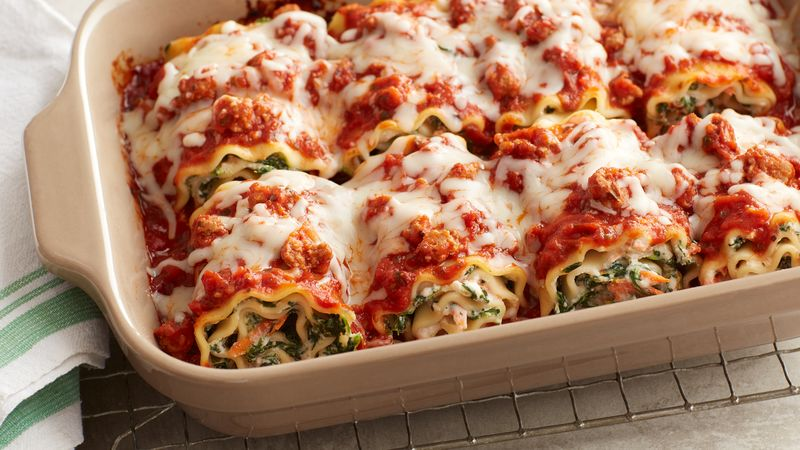

Lasagna Rolls

Kids love this dish and thankfully it's easy to customize to their tastes. Start with the basic recipe then add cooked sausage, pepperoni or black olives, if you like. Little hands can spread the cheese or sauce, sprinkle the fillings or roll up the pasta.
Ingrediants
- Nonstick cooking spray
- 1/2 pound of uncooked lasagna noodles
- 1 cup ricotta cheese
- 1 1/2 cup prepared marinara sauce
- 1 1/2 cup packed baby spinach
- 1/2 cup shredded mozzarella
Steps
- Preheat the oven to 400°F. Meanwhile, bring a large pot of salted water to a boil, add noodles and cook until al dente, 8 to 10 minutes.
- Drain well and gently transfer to a clean work surface.
- Oil a small roasting pan or casserole dish with cooking spray; set aside.
- Working with one noodle at a time, spread with about 2 tablespoons of the ricotta and 2 tablespoons of the marinara then top with spinach.
- Starting at one end, roll up noodle snugly then arrange in pan either seam-side down or with the rolls close enough together to hold each other closed.
- Pour remaining marinara over assembled rolls then sprinkle with mozzarella and bake until golden and bubbly, 20 to 25 minutes.